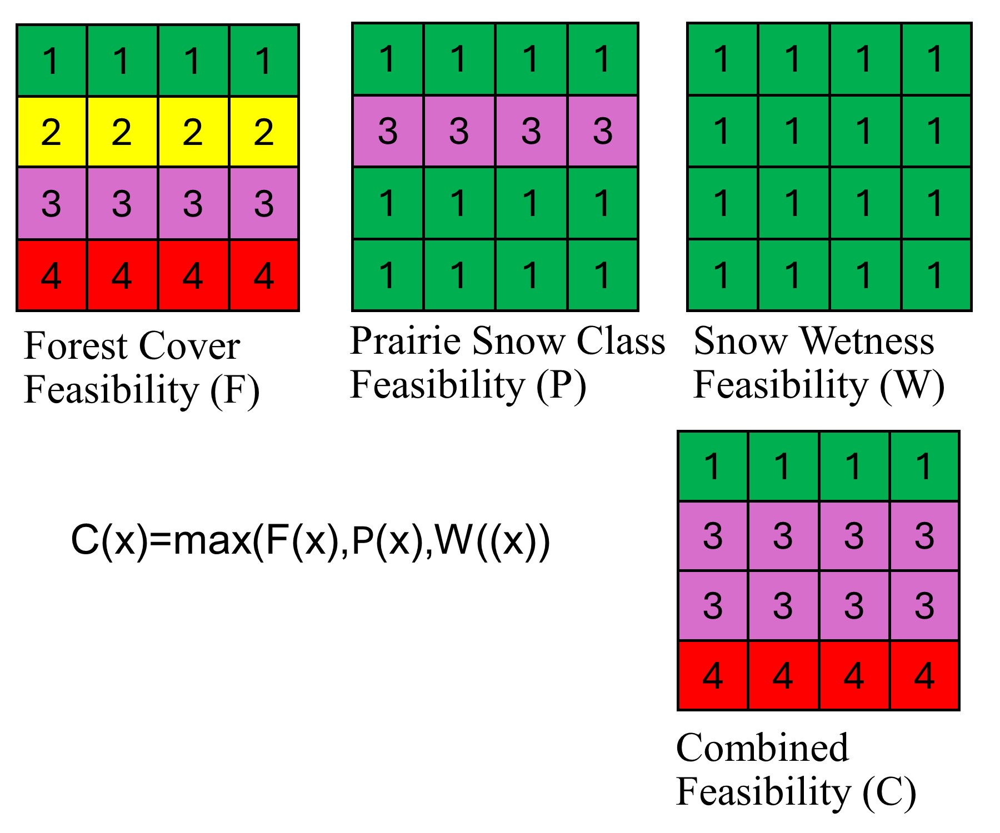
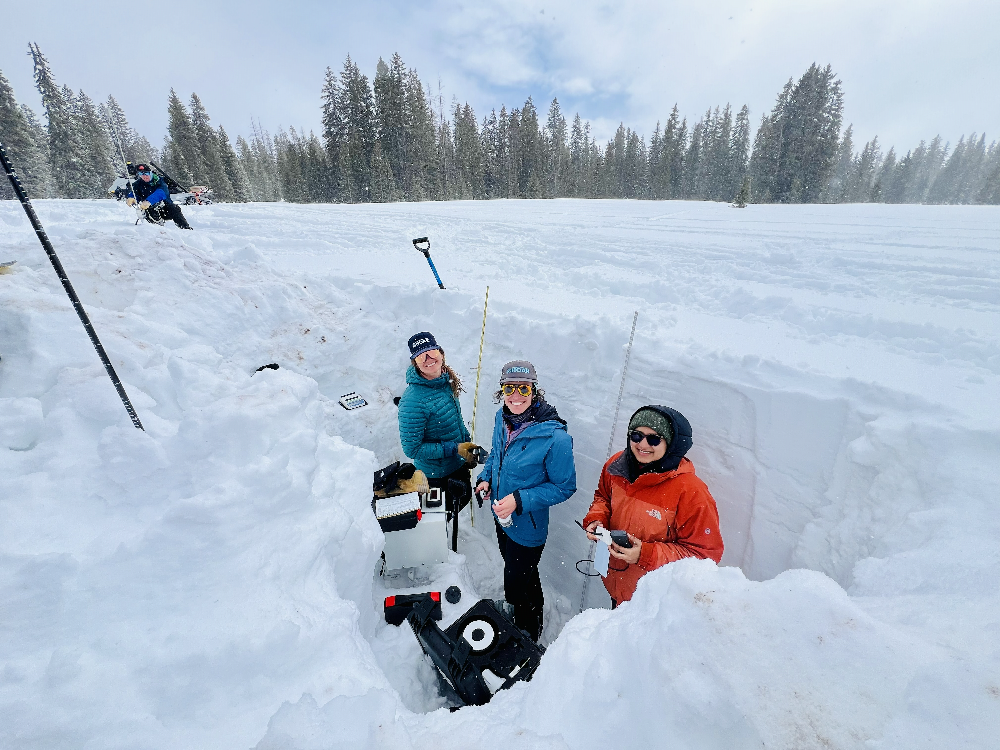
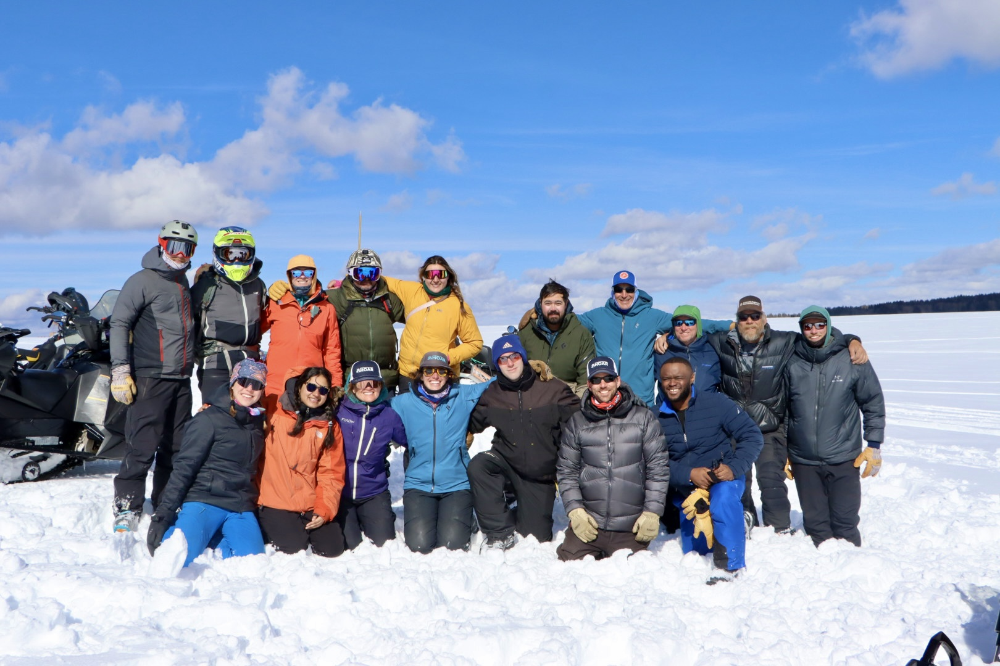

Observe
Snow pits, GPR, seismic refraction, canopy measurements, stream discharge, and snow geophysical instrumentation.
Research approach
My work moves between direct field observations, process understanding, computational modeling, and remote sensing. The goal is to turn physically meaningful measurements into spatially continuous information that can improve snow characterization and, ultimately, hydrologic prediction.
Snow pits, GPR, seismic refraction, canopy measurements, stream discharge, and snow geophysical instrumentation.
Snow density, SWE, liquid water content, stratigraphy, grain properties, terrain, canopy, and subsurface structure.
SnowModel, statistical regression, mixed-effects modeling, spatial statistics, variograms, and geospatial workflows.
UAVSAR, NISAR, Google Earth Engine, LiDAR, Sentinel-1, and ground-penetrating radar for distributed snow information.
Current PhD research
My dissertation research focuses on L-band InSAR feasibility, the physical and terrain controls on radar coherence, and spatial variability in snow density across contrasting snow environments.

I mapped where L-band InSAR is most likely to provide reliable changes in snow water equivalent across western U.S. mountain ecoregions. The framework combines forest cover, snow wetness, snow class, and radar geometry to identify seasonal and regional limits on retrieval feasibility.
Read the paper →
Using NASA SnowEx 2020 UAVSAR observations in the Jemez Mountains, I test how canopy cover, local incidence angle, modeled liquid water content, and topography influence interferometric coherence. SnowModel provides spatially distributed snow conditions that are integrated with radar and terrain data using regression and mixed-effects models.

I use SnowEx 2023 Alaska ground-penetrating radar observations to investigate how snow density and SWE vary across tundra and boreal forest environments. GPR travel times are combined with coincident snow-depth observations, and spatial structure is quantified with semivariograms from within-spiral to between-site scales.
Field research & observations
Field observations anchor my remote-sensing and modeling work in the physical snowpack. I have worked with snow-pit measurements, ground-penetrating radar, liquid-water-content sensors, seismic refraction, canopy measurements, and stream-discharge surveys in mountain environments.



Master's research
Before moving into snow hydrology, my master's research used high-resolution X-ray computed tomography to quantify how conservation management, tillage, image resolution, and sample size influence soil pore architecture.

Quantified how cover crops altered macroporosity, pore number density, and connectivity within strip-tillage cotton soils.
View publication →
Compared pore-network properties across tillage systems and growing seasons to evaluate the effects of disturbance and reconsolidation.
View publication →
Evaluated tradeoffs among CT resolution, field of view, sample diameter, pore detection, anisotropy, and connectivity.
View publication →Research toolkit
My research combines programming, hydrologic and snow modeling, geospatial analysis, field instrumentation, and laboratory methods rather than relying on a single data source or scale.
Python, R, SAS, Fortran, SQLite, Bash
SnowModel, HEC-HMS, MODFLOW, SWAT, HYDRUS-1D, RETC, Rosetta
UAVSAR L-band InSAR, NISAR workflows, Sentinel-1, airborne LiDAR, GPR
Google Earth Engine, ArcGIS, ArcPy, xarray, GeoPandas, Rasterio, ImageJ
MagnaProbe, WISe, Infrasnow, capacitance plate, GPR, seismic arrays, snow samplers, LAI measurements
X-ray CT, soil hydrometer, loss on ignition, bulk density, pH/EC, rainfall simulation and tracer experiments
Selected publications
Peer-reviewed work spanning snow remote sensing, soil pore architecture, conservation agriculture, and water movement through soils.